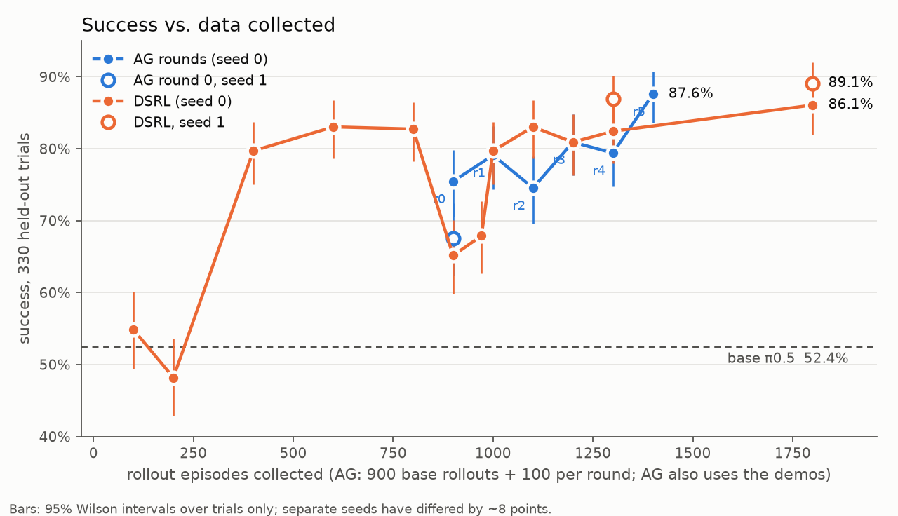
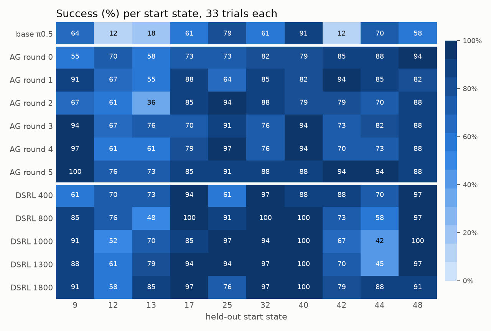
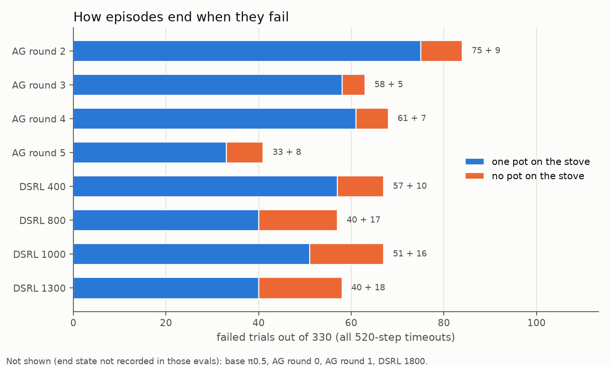
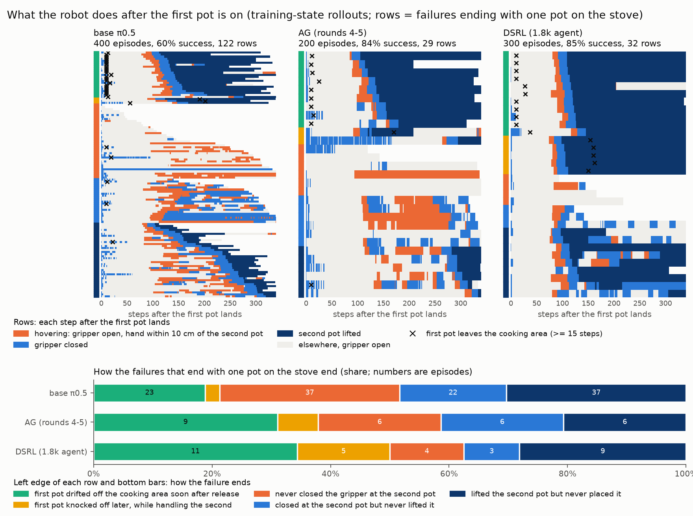
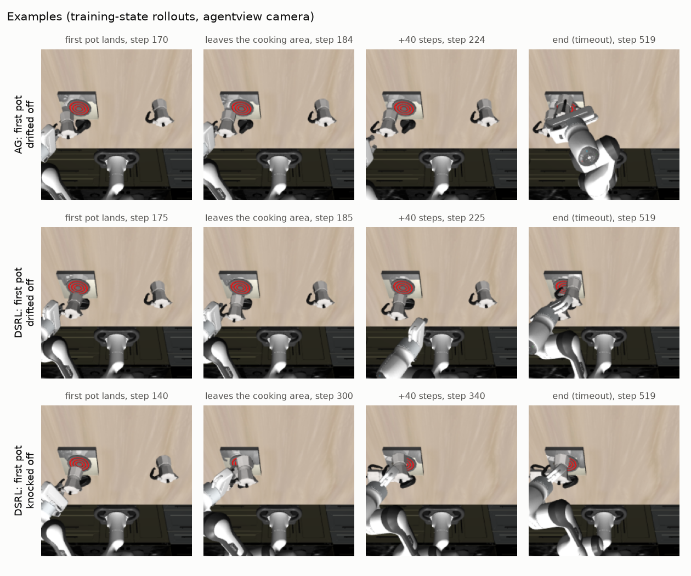

pi05_libero): RL on top of π₀.₅, how the remaining failures happen, and moving the gain back into π₀.₅Two RL methods on top of a frozen π₀.₅ both raise success on held-out start states from 52% to 86–89%: the Advantage Guidance (AG) residual head after five rounds and DSRL after 1,800 rollouts. Most remaining failures put the first pot down at the edge of the stove, where it drifts out of the counted region. Fine-tuning π₀.₅ itself on its own rollouts has never helped; one likely cause is a bug in how those fine-tunes built their action targets. The fine-tunes that test the fix are queued.
Every number is success on the same 330 trials: 10 held-out start states × 33, env seed 7, matched noise. A 95% interval is about ±4 points from trial noise alone; separate training seeds have differed by up to 8 points.



This analysis uses training-state rollouts, which have the full simulator state, so the diagnosis is not tuned to the eval states. Sources: base π₀.₅ (400 episodes), AG (the round 4–5 collections, 200), and the DSRL 1,800 agent (300). Each one-pot failure is assigned one class from the pots' and gripper's positions:
| Failure with a pot on the stove | Base | AG | DSRL |
|---|---|---|---|
| Drift: the first pot is released on the stove edge and leaves the counted cooking region within 50 steps. Nothing knocks it: the hand is ~9 cm away and the gripper is open. | 23 | 9 | 11 |
| Knocked off later by the arm, while working on the second pot | 3 | 2 | 5 |
| Never closes the gripper on the second pot (hovers) | 37 | 6 | 4 |
| Missed grasp: closes but does not lift it | 22 | 6 | 3 |
| Lifted, not placed | 37 | 6 | 9 |
| Total (episodes; success) | 122 (400; 60%) | 29 (200; 84%) | 32 (300; 85%) |


fig5_episodes.csv in the repo.found Nov 14 · effect not yet measured
When we fine-tune π₀.₅ on its own rollouts, each frame's target is the next 10 actions the robot executed. That is right for demos, which are one continuous human motion. A rollout, though, replans every 5 steps, so the executed actions are the first 5 of one sampled chunk followed by the first 5 of the next. Every 10-step target therefore joins two plans (three for frames between replans), and its second half is not what π₀.₅ had planned for those steps.
Measured on base π₀.₅'s own rollouts (9,351 consecutive chunk pairs):
Fine-tuning on these targets teaches π₀.₅ a seam that its own sampling never produces.
Fix: --chunk-targets sampled trains only on replan frames, each with the full 10-action chunk sampled there. The rollout client has saved these chunks since Nov 14; demos keep executed targets.
The bug is in this repo's fine-tune data code (src/vl/libero_finetune_data.py), not in zima.
Tested yet? Not yet. The direct test trains the same base-policy collection twice, once with sampled targets and once with the old executed ones, so the targets are the only difference. Both runs are queued behind the distillation fine-tunes (below).
This follows PLD (arXiv 2511.00091): collect rollouts with the RL policy, then fine-tune π₀.₅ on the successes, so that zima's loop can ship the result as a new generation with no residual head or noise actor at inference (and RTC still applies). Each fine-tune starts from base π₀.₅ and uses filtered BC round 1's recipe (imitation, frozen SigLIP, LoRA, 5,000 steps × batch 32) with sampled chunk targets. Each run is evaluated on the same 330 trials at the final step and at step 2,000.
| Collection (300 train-state episodes) | Success | Replan frames (successes) | Fine-tune |
|---|---|---|---|
| Hybrid: base π₀.₅ for a random prefix (median 157 steps), then the DSRL actor (PLD Sec. 3.2) | 76.7% | 17,134 | training step ~1,850 / 5,000 |
| DSRL: the DSRL actor from step 0 | 85.0% | 16,503 | queued |
| Base: plain π₀.₅, sampled targets (tests the chunk fix alone) | 57.3% | 14,508 | queued |
| Base, executed targets (control: same data, old targets) | 57.3% | 72,238 executed frames | queued |
How to read the results. Distilled hybrid ≥ ~75%: the gain survives distillation. ~50%: π₀.₅ does not absorb it by fine-tuning. Base sampled clearly above base executed: the chunk bug was part of why fine-tunes hurt. Both near 55%: the fix alone changes little.
| Job | What | State |
|---|---|---|
| 18509035 | AG round 6 training (1,500 rollouts); its eval follows (18509036, 18509037) | running |
| 18507656 | Distill: hybrid fine-tune, sampled targets; evals 18507697, 18507747 | resuming after preemption |
| 18507772 | Distill: DSRL-only fine-tune; evals 18508042, 18508053 | queued |
| 18509769 | Distill: base fine-tune, sampled targets; evals 18509770, 18509771 | queued |
| 18509785 | Control: base fine-tune, executed targets; evals 18509786, 18509787 | queued |
Done today: DSRL seed 1 held-out evals (87.0% at 1,300 and 89.1% at 1,800). The noisy-judge robustness test was dropped. More background: architecture page, section 4 (why fine-tuning has not helped) and the Nov 10 update.
Built 2026-11-20 11:05 PT from reports/site/content/ by scripts/build_site.py.